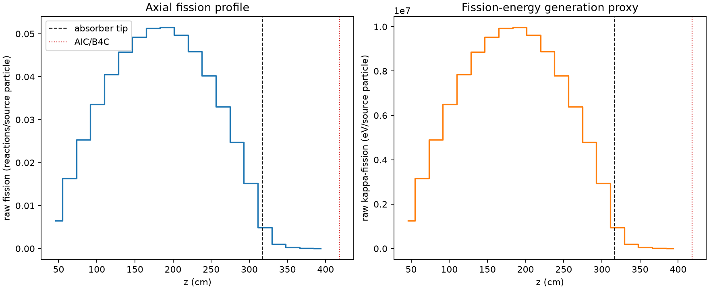
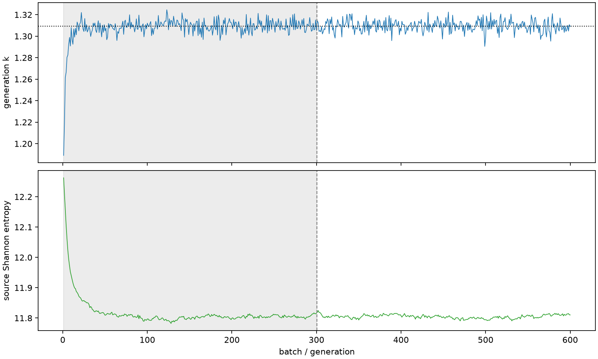

| field | value |
|---|---|
| experiment | V2-STAGE_128_OGRENCI_04-0015 |
| k | 1.3093571463390845 |
| MC standard error | 0.00020019029227168395 |
| seconds | 945.8722267390003 |
| acceptance | not_assessed |
| convergence | review_required |
Completed is output integrity only; physical and statistical review required. Zero tallies do not prove zero production or zero uncertainty.
| diagnostic | value |
|---|---|
| geometric fuel voxels | 5280 |
| zero fission tally voxels | 0 |
| low signal fuel voxels | 414 |
| low signal fission share | 9.247341187477506e-05 |
| low signal kappa share | 9.250729232080644e-05 |
| important fission share | 0.9501009145685747 |
| previous filter included | 4866 |
| duration estimate s | 1562.5173488400023 |
| actual minus estimate s | -616.645122101002 |
| fission relative MC error | statistics |
|---|---|
| all_geometric_fuel | {"voxels": 5280, "positive_mean_voxels": 5280, "zero_mean_voxels": 0, "undefined_relative_error_voxels": 0, "median": 0.01058878355344906, "p95": 0.2780032445517735, "maximum": 0.7958245747228647} |
| low_signal | {"voxels": 414, "positive_mean_voxels": 414, "zero_mean_voxels": 0, "undefined_relative_error_voxels": 0, "median": 0.34171345325007496, "p95": 0.5417852337899379, "maximum": 0.7958245747228647} |
| important_95pct | {"voxels": 3451, "positive_mean_voxels": 3451, "zero_mean_voxels": 0, "undefined_relative_error_voxels": 0, "median": 0.008833812901761263, "p95": 0.013652368447408409, "maximum": 0.016790707897306377} |
| outside_previous_filter | {"voxels": 414, "positive_mean_voxels": 414, "zero_mean_voxels": 0, "undefined_relative_error_voxels": 0, "median": 0.34171345325007496, "p95": 0.5417852337899379, "maximum": 0.7958245747228647} |
| kappa_fission relative MC error | statistics |
|---|---|
| all_geometric_fuel | {"voxels": 5280, "positive_mean_voxels": 5280, "zero_mean_voxels": 0, "undefined_relative_error_voxels": 0, "median": 0.01057813829723521, "p95": 0.2775819595456264, "maximum": 0.7947690919616623} |
| low_signal | {"voxels": 414, "positive_mean_voxels": 414, "zero_mean_voxels": 0, "undefined_relative_error_voxels": 0, "median": 0.3412883475777262, "p95": 0.5407144281440938, "maximum": 0.7947690919616623} |
| important_95pct | {"voxels": 3451, "positive_mean_voxels": 3451, "zero_mean_voxels": 0, "undefined_relative_error_voxels": 0, "median": 0.008824678244247552, "p95": 0.013638492884998028, "maximum": 0.016773000237873693} |
| outside_previous_filter | {"voxels": 414, "positive_mean_voxels": 414, "zero_mean_voxels": 0, "undefined_relative_error_voxels": 0, "median": 0.3412883475777262, "p95": 0.5407144281440938, "maximum": 0.7947690919616623} |
| axial bin | fission share | kappa-fission share |
|---|---|---|
| 1 | 0.012104984961291 | 0.012105534561366805 |
| 2 | 0.030440465329515675 | 0.03044043342002845 |
| 3 | 0.04739150902083587 | 0.047391401109373954 |
| 4 | 0.06268296985514965 | 0.06268275491648899 |
| 5 | 0.07580409994413308 | 0.07580393715868493 |
| 6 | 0.08552848184279853 | 0.08552824730696759 |
| 7 | 0.09209122468629476 | 0.09209118647681594 |
| 8 | 0.0958385565795895 | 0.0958380575689655 |
| 9 | 0.09616478049595795 | 0.09616442591781518 |
| 10 | 0.09284464899450398 | 0.09284435405539924 |
| 11 | 0.08580305402206247 | 0.08580277518856877 |
| 12 | 0.07528122004690783 | 0.07528092015528771 |
| 13 | 0.06173656440946901 | 0.06173633204294872 |
| 14 | 0.04622537073912645 | 0.0462251869423706 |
| 15 | 0.028362437982063143 | 0.028362519846084743 |
| 16 | 0.009149447066560611 | 0.00915087070367421 |
| 17 | 0.0019299539938637603 | 0.0019306177764707947 |
| 18 | 0.0004746680239158067 | 0.00047482978044193814 |
| 19 | 0.00012180315001657609 | 0.00012184486942296577 |
| 20 | 2.3758855944253496e-05 | 2.3770202822917245e-05 |
Histories include the inactive-to-active transition at batch 300. kappa-fission approximates fission energy production, not total heat deposition.

